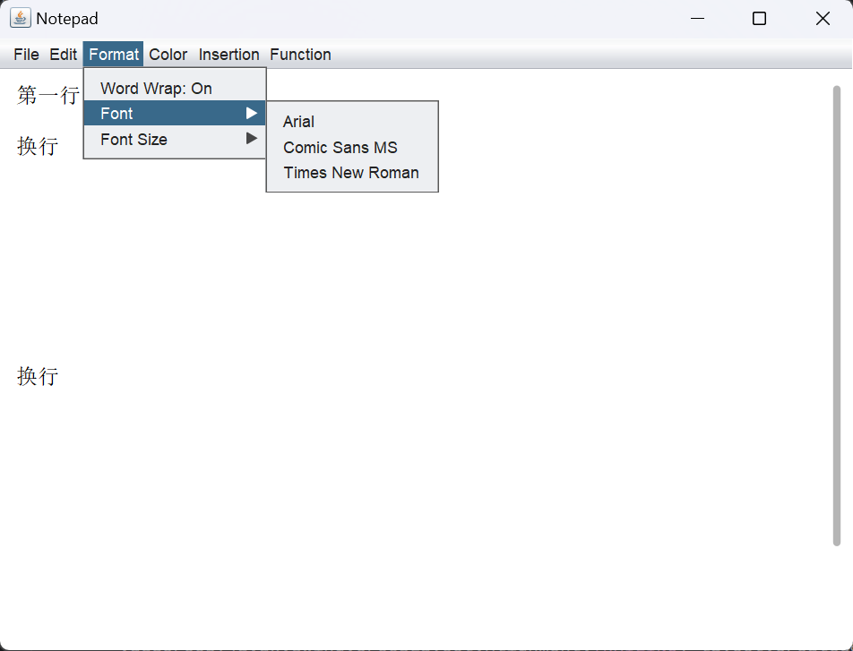
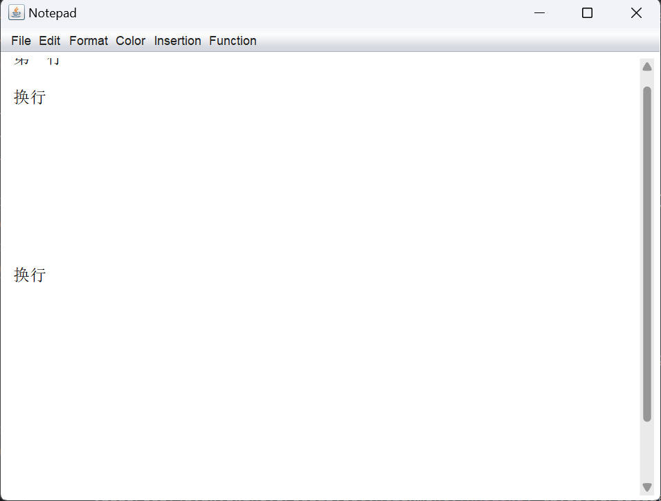

UI美化
滚动条美化： 重写覆盖原先的JScrollPane模块，并在主函数中调用。 原先的scroller创建过程：
JScrollPane scrollPane = new JScrollPane(); scrollPane = new JScrollPane(textArea, JScrollPane.VERTICAL_SCROLLBAR_AS_NEEDED, JScrollPane.HORIZONTAL_SCROLLBAR_AS_NEEDED); scrollPane.setBorder(BorderFactory.createEmptyBorder()); //delete border window.add(scrollPane);现在的scroller创建，采用的是写在scroll文件夹下的滚动条创建函数，替代原有函数。
scrollPane = new ScrollPaneWin11();//create scroll pane scrollPane.setBorder(BorderFactory.createEmptyBorder()); //delete border scrollPane.setViewportView(textArea); javax.swing.GroupLayout layout = new javax.swing.GroupLayout(window.getContentPane()); window.getContentPane().setLayout(layout);然后分别设置水平与竖直的滚动条。
//set horizontal scroller layout.setHorizontalGroup( layout.createParallelGroup(javax.swing.GroupLayout.Alignment.LEADING) .addGroup(layout.createSequentialGroup() .addContainerGap() .addComponent(scrollPane, javax.swing.GroupLayout.DEFAULT_SIZE, 624, Short.MAX_VALUE) .addContainerGap()) ); //set vertical scroller layout.setVerticalGroup( layout.createParallelGroup(javax.swing.GroupLayout.Alignment.LEADING) .addGroup(javax.swing.GroupLayout.Alignment.TRAILING, layout.createSequentialGroup() .addContainerGap() .addComponent(scrollPane, javax.swing.GroupLayout.DEFAULT_SIZE, 444, Short.MAX_VALUE) .addContainerGap()) );注：为了达到更好的效果，需要在main函数里对UIManager进行相应设置。
javax.swing.UIManager.setLookAndFeel(info.getClassName());
最终效果如下：
菜单栏 
被鼠标放置时的滚动条 